处理器设计
处理器需求分析¶
在单核情况下，一个系统内部，大致分为三个板块：输入、存储、输出
应该有一块专门用于处理的处理器(Processor)，用于存储的内存(Memory),还有用于对接两者的处理器-内存接口(Processor-Memory Interface)
缓存(Cache)是指可以进行高速数据交换的存储器
功能层面上的CPU定义¶
CPU(Central Processing Unit)：能够通过输入的机器码，执行相应的操作、并保持相应状态的数字电路
CPU的组成部分¶
- 数据通路：是处理器中执行操作的硬件
- 执行控制器的操作（例如:控制器“告诉”数据通路，执行add指令，则数据通路就会将相应操作数传给加法器/运算器...）
- 控制器：是对数据通路要做什么操作进行调度的硬件
- “告诉”数据通路需要执行什么操作？需要读内存吗？读哪个寄存器？需要写寄存器吗？写哪个寄存器？...
例：addi t0,x0,6 000000000110 00000 000 00101 0010011
- 数据通路：
- 根据收到的控制器信息可知：
- 操作数为0号寄存器的值和立即数“6”
- 执行加法运算—>选择0号寄存器的值和立即数作为操作数，并选择加法器的结果作为最终结果
- 加法运算结果写入目的寄存器t0
- 根据收到的控制器信息可知：
- 控制器
- 要让数据通路执行什么操作？（人工查表...）
- 加减乘除...、分支...
- 源操作数应该如何选择？
- **哪个寄存器？**t0(x5), x0
- 立即数是什么？
- 指令执行完，PC如何改变？
- 要让数据通路执行什么操作？（人工查表...）
处理器设计步骤¶
- 分析指令系统，得出对数据通路的需求
- 为数据通路选择合适组件
- 根据指令需求连接组件建立数据通路
- 分析每条指令的实现，以确定控制信号
- 集成控制信号，形成完整的控制逻辑
部分指令需求¶
R型指令: op dst,src1,src2
- 需求：算术逻辑运算器，可读写的寄存器（需要同时读2个）
I型指令: opi dst,src,imm、load dst，offffsfset(bAddrReg)、jalr rd, offffsfset(rs1)
- 新增需求：立即数扩展、PC寄存器、存储器可读、加法器
S型指令： store src, offset(bAddrReg)
- 新增需求：存储器可写、立即数生成器
B型指令：bxx src1,src2, label
- 新增需求：多路选择器、更复杂的立即数生成器
J型指令：jal rd, offset
- 新增需求：更复杂的立即数生成器
U型指令：AUIPC将长立即数加到PC并写入目的寄存器
- ...
需求汇总¶
- 算术逻辑单元（ALU）
- 运算类型：加、减、或、比较等各种运算
- 立即数生成器
- 零扩展、符号扩展、字段拼接等
- 程序计数器（PC）
- 存储组件
- 寄存器堆(RF:Register File)，存储器(Memory)
RISC-V数据通路的组件选择¶
组件分类¶
- 组合逻辑单元
- 时序逻辑单元（状态单元）
冯诺依曼架构 vs 哈佛架构¶
冯诺依曼架构（X86）
- 程序空间和数据空间一体
- 指令和数据的宽度相同
- 指令和数不能同时进行操作，只能顺序进行
哈佛架构（ARM、DSP）
- 存储器分为数据存储器和程序存储器，总线分为程序存储器的数据总线和地址总线以及数据存储器的数据总线和地址总线
- 可以对数据和程序同时进行操作，有较高的执行效率
- 指令和数据可以有不同的宽度
数据通路中的主要状态单元（存储器）¶
- 将指令和数据保存在字节寻址的存储空间中
- 指令存储器和数据存储器分开
- 从指令存储器读（取）指令，在数据存储器读写数据
数据存储器（DM）¶
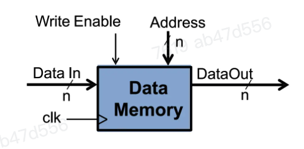
读写控制
- Address：指定一个存储单元，将其内容送到数据输出端
- WriteEnable：写使能。在时钟信号（clk）的上升沿，如果该信号有效，将输入数据存入地址信号指定的存储单元
存储器的读操作不受时钟控制
指令存储器（IM）¶
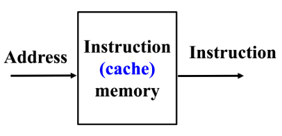
- 输入总线：Instruction Address
- 输出总线：Instruction
- 数据通路中不会写指令存储器
- “读操作”可以视为组合逻辑电路
寄存器堆（RF）¶
- 内部由32个寄存器构成
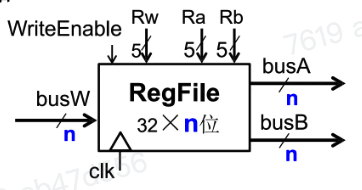
- 读写控制
- Ra/Rb(5位)：将对应编号的寄存器的内容放到busA/A/busB(读)
- Rw(5位)：在时钟信号(clk)的上升沿，如果写使能信号(WriteEnable)有效，将busW的内容存入Rw号寄存器
寄存器堆的读操作不受时钟控制
数据通路要求¶
- 算术逻辑单元(ALU)
- 立即数扩展部件
- 程序计数器(PC)
RISC-V部分指令的数据通路设计¶
所有指令的共同需求——取指令、更新PC¶
- 取指令
- 程序计数器PC的内容是当前指令的地址
- 用PC的内容作为地址，访问指令存储器，获得指令编码
- 顺序执行更新PC
- PC←PC+4
- 发生分支时更新
- PC←分布目标地址
实现add指令¶
add rd,rs1,rs2
- 指令对机器状态进行两次更改：
- 寄存器内容发生改变
- PC内容改变(PC=PC+4)
- 控制器根据IM的输出分析指令的opcode和funct域，确定控制信号
- 根据IM的输出读出RF中相应2个寄存器的值
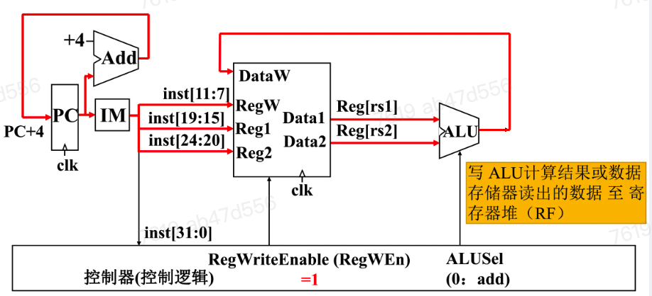
实现sub指令¶
与add几乎相同，inst[30]在加法和减法之间进行选择
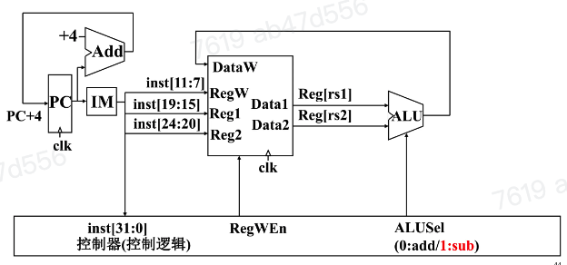
实现addi指令¶
在sub电路中的Reg[rs2]处添加一个多路复用器用于选择立即数与Reg[rs2]，并且将12位的立即数扩展为32位
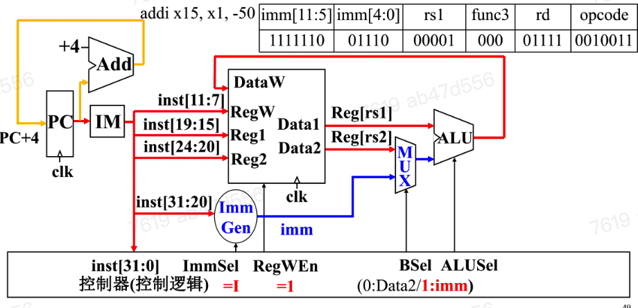
I型指令的立即数生成¶
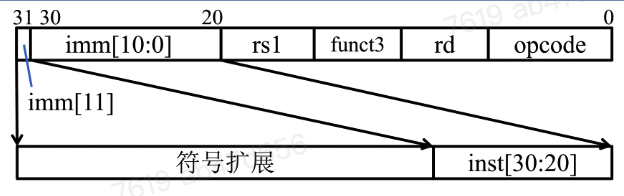
- 指令将12位立即数字段复制到立即数的低12位
- 将指令的最高比特位复制填充到立即数的高位完成符号扩展
实现ld指令¶
ld x14,8(x2)
- 寄存器
rs1保存基地址，加上立即数，得到目标访问地址- 与addi类似，但ALU用于计算地址，而不是获得最终结果
- 从存储器读出的数据装入寄存器
rd中
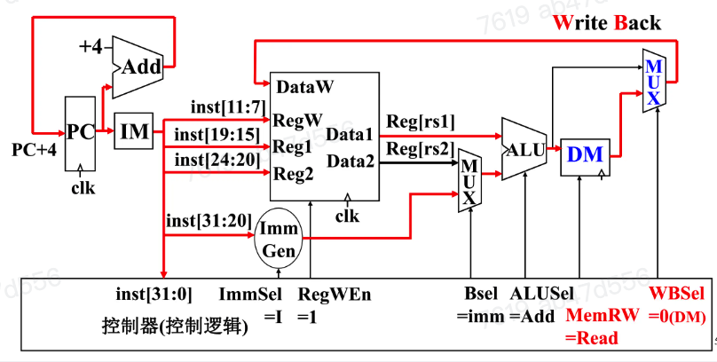
ld指令中写回DataW的数据是从DM内读取的值，需要在ALU与DM后增加一个多路复用器用于控制写回的数据
在RISC-V访存装载指令中，还有lb,lh等指令。为了支持8位，16位，32位，之后还需要增加额外的逻辑电路，用于从存储器取出的数据中提取出字节、半字、字等不同大小的数据并且对数据进行符号扩展或零扩展
实现sd指令¶
sd x14, 8(x2)
读取两个寄存器，rs1作为提供基地址的源寄存器，rs2作为提供待保存数据的源寄存器，以及立即数偏移量
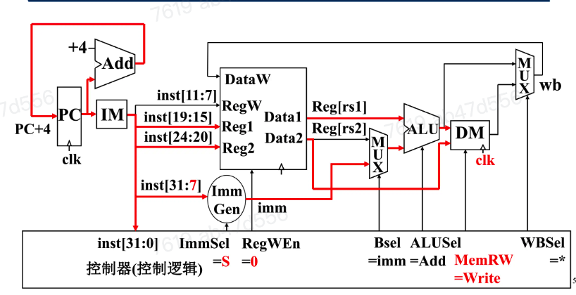
在ld基础上，将rs2地址传入DM以进行写操作
I型指令与S型指令的立即数生成¶
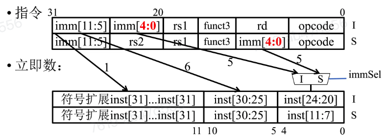
- 立即数低5位由I型和S型对应的控制信号
immSel选择 - 立即数中的其他位连接到指令中的固定位置
实现B型指令¶
- B型指令格式与S型指令格式基本相同
- 但立即数字段以2字节为增量表示-4096到+4094的偏移量
- 12位立即数字段表示13位有符号字节地址的偏移量
- 偏移量的最低位始终为零，因此无需存储
B型指令：beq、bne、blt、bge、bltu、bgeu
- PC不同的状态变化：
- PC+ 4 (不发生分支转移)
- PC + immediate (发生分支转移)
- 需要比较rsl和rs2的数值关系，并计算 PC+立即数 的结果
- 需要添加一个ALU vs. 加专门的比较硬件电路(??)
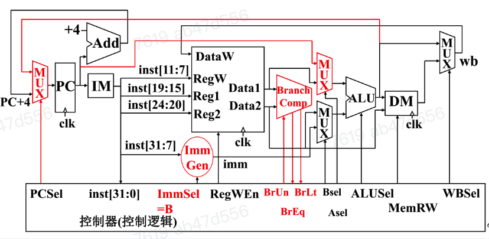
BranchComp为分支跳转比较器
- 当A = B时，输出
BrEq= 1，否则为0 - 当A < B时，输出
BrLt= 1，否则为0 - 输入
BrUn= 1时，进行无符号比较 - 输入
BrUn= 0时，进行有符号比较 - 对于bge，可以根据BrLt信号取反判断A ≥ B
B型指令立即数生成¶
与S型指令立即数生成方式相似
- S型立即数最低位在B型立即数中变为第12位
- 只有一位数据在编码位置上有差异（需要两个1位两路选择器）
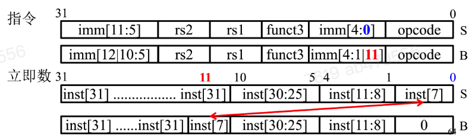
I型指令——jalr¶
jalr rd, offset(rs1)
- 将PC+4写入rd（返回地址）
- 设置PC=R[rs1]+offset
- 立即数生成与I型算术和装载命令一致
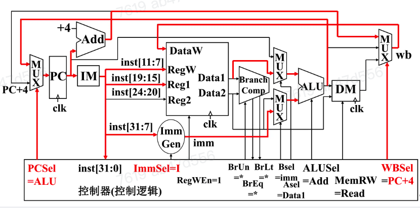
J型指令——jal¶
- jal将PC+4写入目的寄存器当中
-
设置 PC = PC + offset
-
立即数字段20位，对应一个\(\pm 2^{19}\)的偏移量(以2字节为单位)
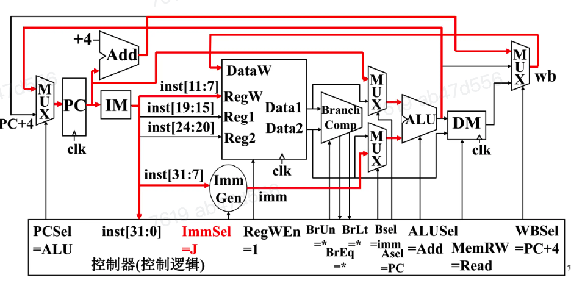
U型指令——aupic¶
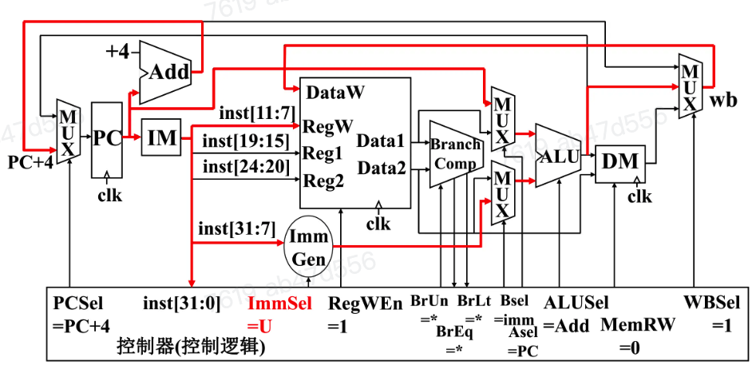
单周期CPU设计模型¶
- 每个时钟周期执行一次
- 每个状态值通过一系列组合逻辑
- 在下一有效时钟沿到来时，所有时序逻辑单元状态更新
RISC-V控制器¶
ROM¶
ROM是一种具有n个输入b个输出的组合逻辑电路
指令时延¶
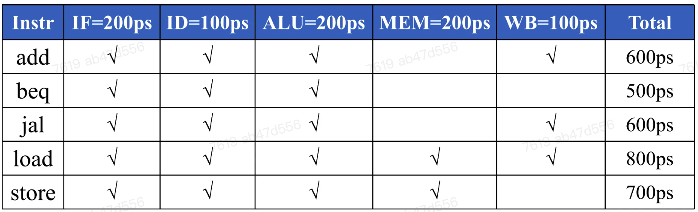
最大时钟频率\(f_{max},ALU=1/(800ps)=1.25GHz\)
有些段多数时间处于空闲状态，单个段最大时钟频率\(f_{max}=5GHz\)
分阶段的数据通路¶
问题：单块的逻辑结构完成对所有指令从取指到执行的所有操作，设计笨重，效率低下
分阶段的数据通路设计：（分而治之）将原来执行一条指令的过程，拆分为几个阶段，然后将这几个阶段对应的电路结构前后串联起来构成完整的数据通路
单周期CPU处理器小结¶
- 实现了RISC-V处理器的数据通路
- 能够在一个时钟周期内执行给定RISC-V指令子集
- 并非所有指令都会用到所有硬件单元
- 关键路径（在数据通路上的延时决定了时钟周期的下限）
- 控制器指定如何执行指令
- 基于ROM或组合逻辑实现
- 5个执行阶段
- 取址、译码、执行、访存、写回